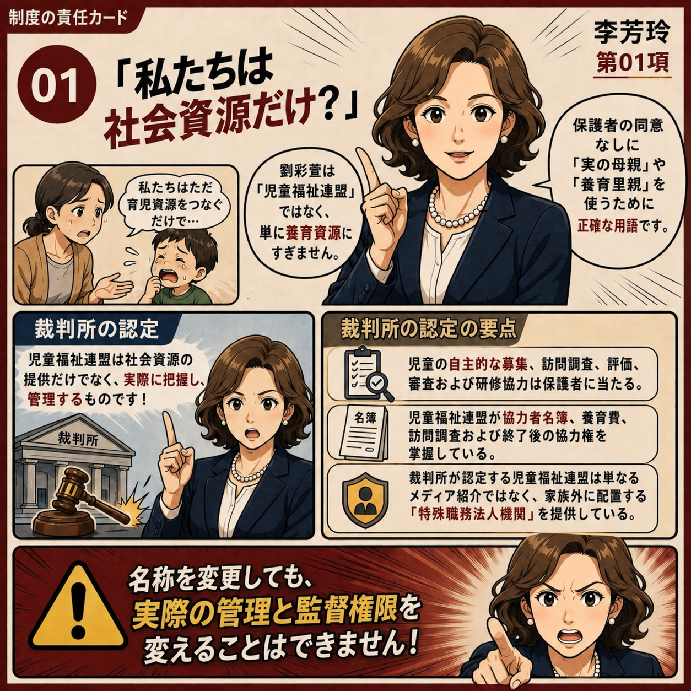
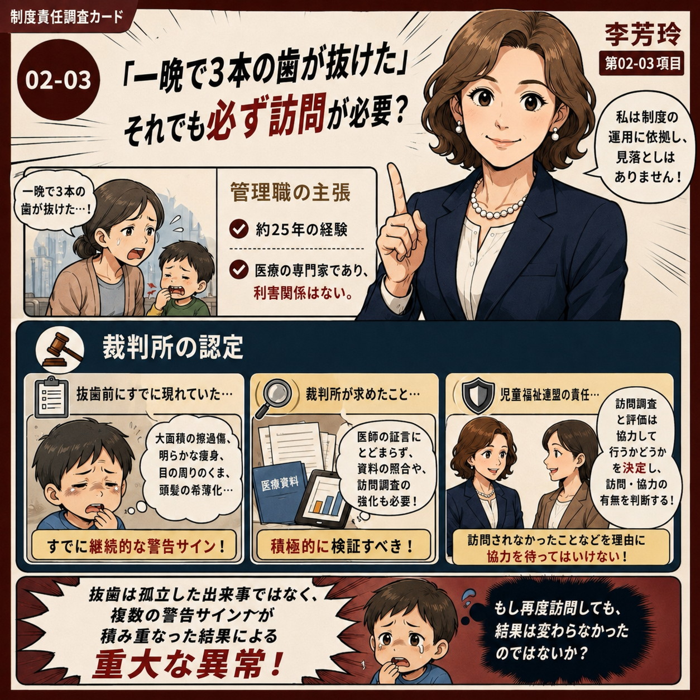
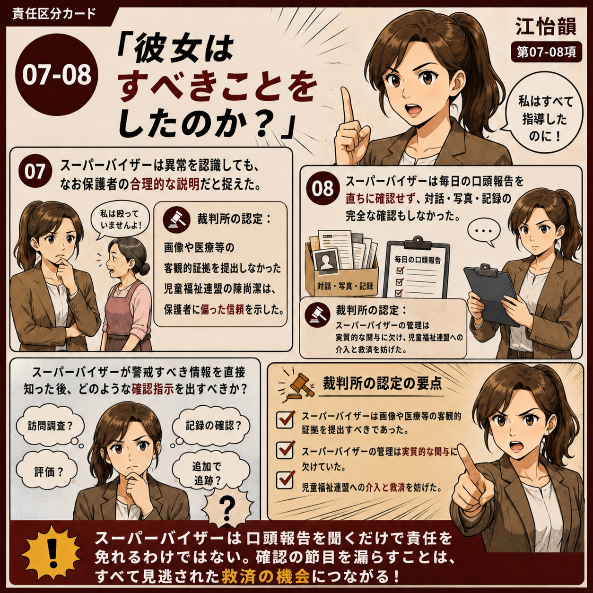
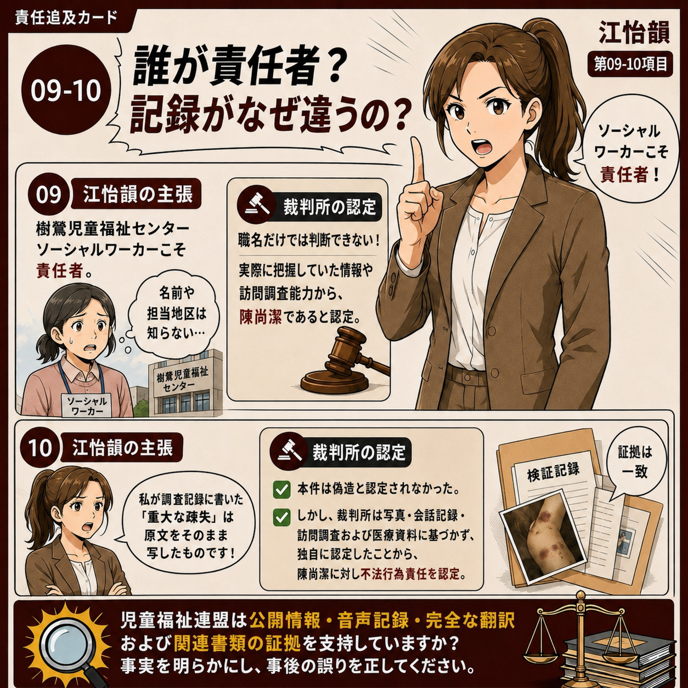
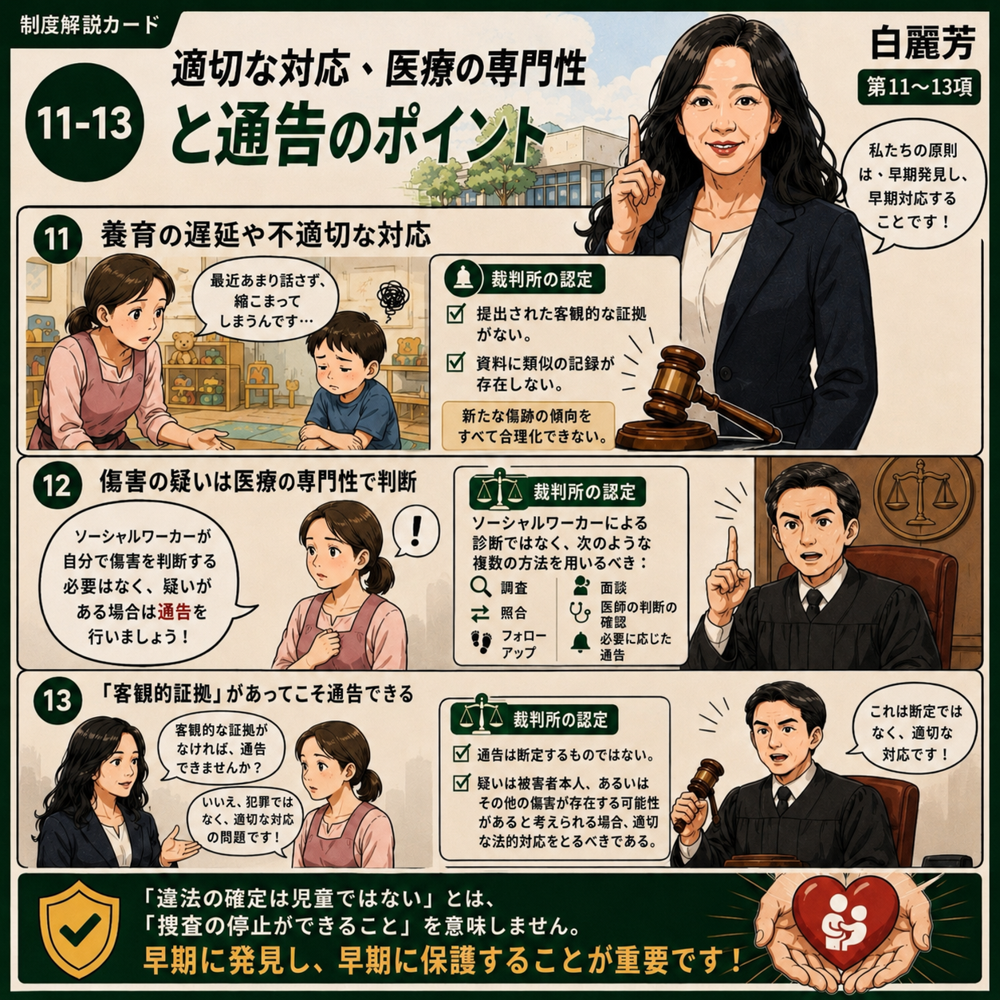
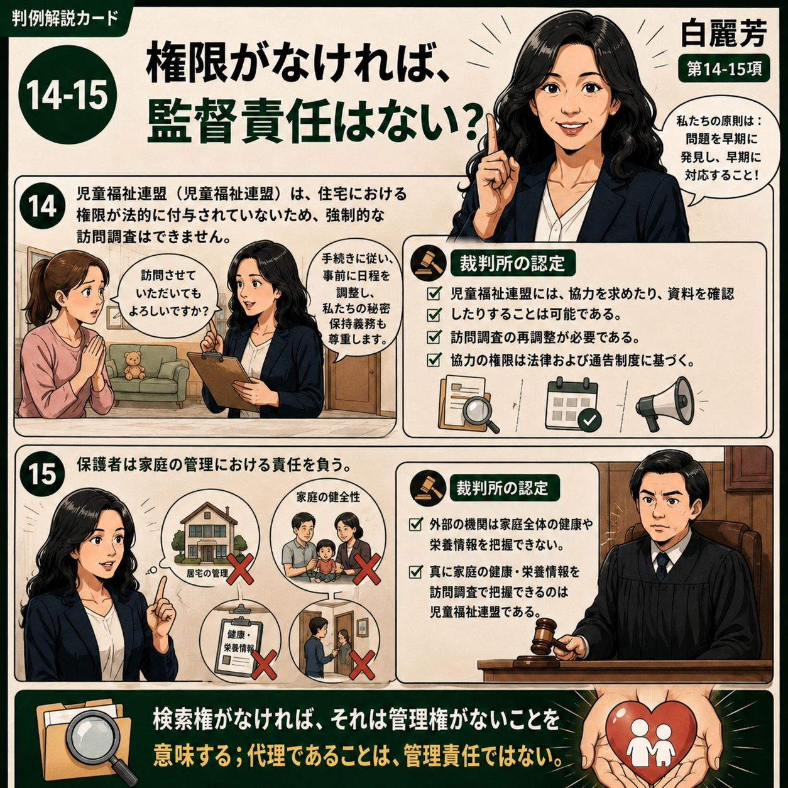
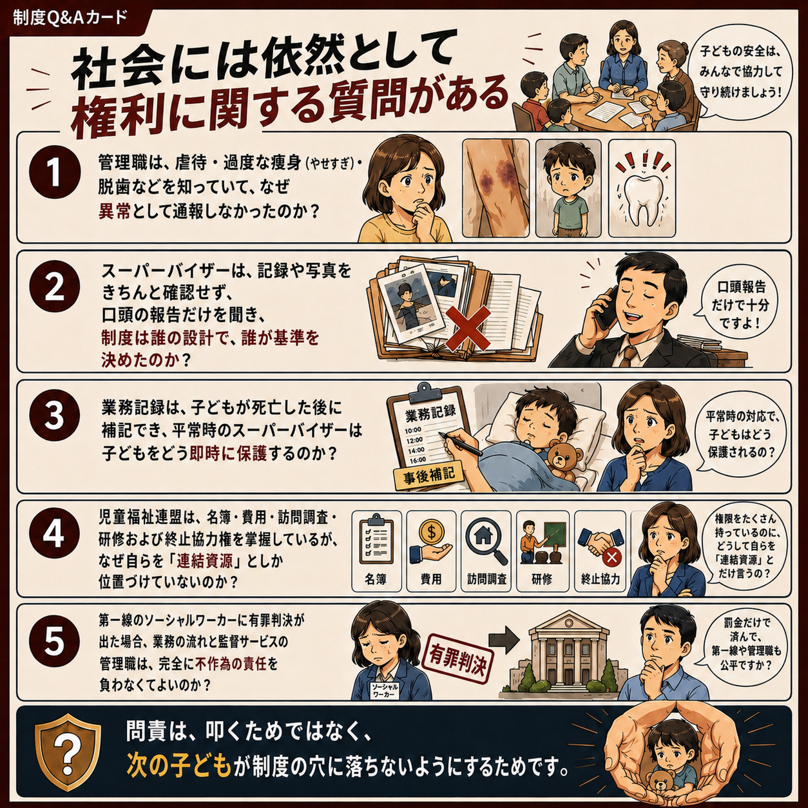

VOL.3P.1

法廷記録漫画 VOL.3｜1ページ目
児童福祉連盟のソーシャルワーカー陳尚潔に対する一審審理では、三名の管理職が相次いで出廷し、当時のスーパービジョン体制、業務フロー、ケース管理、そして陳尚潔による児童保護業務の遂行に対する認識と評価について、それぞれ証言しました。
これらの管理職の証言は、関連する業務記録やその他の証拠とともに、児童福祉連盟と協力保育者との管理関係、監督責任、そして陳尚潔が確認・追跡・通告義務を果たしていたかを一審裁判所が判断するうえで重要な根拠となりました。
管理職は法廷でどのように説明し、裁判所はそれらの主張をどのように検討し、一つずつ認定したのでしょうか。
本シリーズの図解を通じて、三名の管理職の法廷での証言を振り返り、一審判決が認定した事実と責任を照らし合わせます。
※以下の図文は一審の公判記録および判決内容をもとに要点を整理したもので、公判の逐語録ではありません。三名の管理職は本件の刑事被告人ではなく、一審の被告人は陳尚潔です。
図解はページ内に完全に埋め込まれています。下へスクロールして読むか、サムネイルから各ページへ移動できます。
P.1
P.2

P.3
P.4 P.5
P.6
P.7
P.8
P.9
P.10